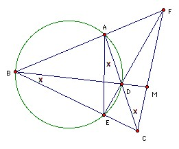

ABC is a triangle. A circle through A and B meets the sides AC, BC at D, E respectively. The lines AB and DE meet at F. The lines BD and CF meet at M. Show that M is the midpoint of CF iff MB·MD = MC2.
Solution

If MB·MD = MC2, then BM/MC = CM/MD, so triangles CMD and BMC are similar, so ∠MCD = ∠MBC. But ABED is cyclic, so ∠MBC = ∠DAE, so AE is parallel to CF. But now we can reverse the argument, but "reflecting" about BM so that we interchange A and E, and C and F, to conclude that MB·MD = MF2.
Suppose conversely that MC = MF. Applying Ceva's theorem to triangle BCF, we have that (BA/AF)(1)(CE/EB) = 1, so BA/AF = BE/EC so AE is parallel to CF. We can now use the argument above to show that MB·MD = MC2.

© John Scholes
jscholes@kalva.demon.co.uk
6 Aug 2003
Last corrected/updated 27 Oct 03